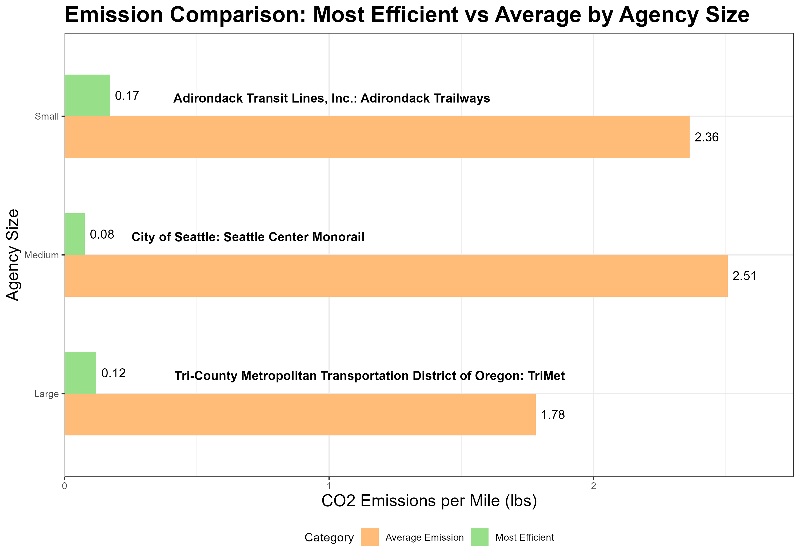

This white paper presents an analysis for Mini-Project #02, where we evaluate public transit agencies for the GTA IV Green Transit Awards. As Executive Director of the Green Transit Alliance for Investigation of Variance (GTA IV), our goal is to recognize agencies excelling in sustainability, focusing on carbon emissions reduction and energy efficiency.
Using data from the National Transit Database (NTD) and the Energy Information Administration (EIA), we apply multi-table operations to uncover insights and identify the top-performing agencies in terms of electrification and environmental impact.
The interactive table below displays data collected from the State Electricity Profiles. It shows the effective emissions per MWh, the price and the total state-wide generation capacity. This data will be used to analyze the emissions of different transit systems accross United States.
Which State has the most expensive retail electricity?
The state with the most expensive retail electricity is Hawaii with an Average Retail Price of $386 for 1000 kWh.
Show the code
kable(most_expensive_electricity|>rename(`Pounds of CO2 Emitted per MWh of Electricity Produced`=CO2_MWh, `Primary Source of Electricity Generation`=primary_source, `Average Retail Price for 1000 kWh`=electricity_price_MWh, `Total Generation Capacity (MWh)`= generation_MWh, State=state))
Pounds of CO2 Emitted per MWh of Electricity Produced
The state with the dirtiest electricity mix is West Virginia which the Primary Source of electricity is Coal, emitting 1,925 Pounds of CO2 per MWh of Electricity Produced
Show the code
kable(dirtiest_electricity|>rename(`Pounds of CO2 Emitted per MWh of Electricity Produced`=CO2_MWh, `Primary Source of Electricity Generation`=primary_source, `Average Retail Price for 1000 kWh`=electricity_price_MWh, `Total Generation Capacity (MWh)`= generation_MWh, State=state))
Pounds of CO2 Emitted per MWh of Electricity Produced
Primary Source of Electricity Generation
Average Retail Price for 1000 kWh
Total Generation Capacity (MWh)
State
abbreviation
1,925
Coal
$102.60
52,286,784
West Virginia
WV
On average, how many pounds of CO2 are emitted per MWh of electricity produced in the US?
Show the code
# Taking a weighted average taking in consideration MHw of electricity producedweighted_avg <- EIA_SEP_REPORT |>summarize(CO2_MWh_avg =sum(CO2_MWh * generation_MWh) /sum(generation_MWh))weighted_avg$CO2_MWh_avg <-number(weighted_avg$CO2_MWh_avg)
On average US produces 805 pounds of CO2 per MWh of electricity produced.
What is the rarest primary energy source in the US?
Show the code
#grouping the data by primary sourceenergy_source <- EIA_SEP_REPORT |>group_by(primary_source) |>summarize(count =n(), electricity_price_MWh, state , CO2_MWh , generation_MWh ) |>arrange(count)# returning the bottom value(rarest)rarest_energy_source <- energy_source|>head( , n=1)rarest_energy_source$electricity_price_MWh <-dollar(rarest_energy_source$electricity_price_MWh)
The rarest primary energy source in the US is Petroleum , which is only used in Hawaii to produce electricity, with an average cost of $386 per 1000 KWh
Show the code
kable(rarest_energy_source|>select(-count)|>mutate(CO2_MWh =number(CO2_MWh, big.mark=","), generation_MWh =number(generation_MWh, big.mark=","))|>rename(`Pounds of CO2 Emitted per MWh of Electricity Produced`=CO2_MWh, `Primary Source of Electricity Generation`=primary_source, `Average Retail Price for 1000 kWh`=electricity_price_MWh, `Total Generation Capacity (MWh)`= generation_MWh, State=state))
Primary Source of Electricity Generation
Average Retail Price for 1000 kWh
State
Pounds of CO2 Emitted per MWh of Electricity Produced
Total Generation Capacity (MWh)
Petroleum
$386
Hawaii
1,444
9,194,164
How many times cleaner is NY’s energy mix than Texas?
Show the code
# creating NY emission intensity by taking CO2 emission and dividing it by the total generation of electricityny_emission <- EIA_SEP_REPORT|>filter( state =="New York")|>summarize(CO2_MWh, primary_source, electricity_price_MWh, generation_MWh)|>mutate(emis_intensity = CO2_MWh/generation_MWh)# creating Texas emission intensity by taking CO2 emission and dividing it by the total generation of electricitytexas_emission <- EIA_SEP_REPORT|>filter( state =="Texas")|>summarize(CO2_MWh, primary_source, electricity_price_MWh, generation_MWh)|>mutate(emis_intensity = CO2_MWh/generation_MWh)#dividing the ny emission intensity by texas , to see how many time is ny cleanercleaniness_factor <- ny_emission$emis_intensity / texas_emission$emis_intensity
Texas, has a reputation as being the home of “dirty fossil fuels” while NY has a reputation as a leader in clean energy. By taking the emission factors of both states we found that New York is 2.69 cleaner than Texas
Datasets Transformation
Downloading 2023 Annual Database Energy Consumption
The National Transit Database contains information about transit agencies across the U.S., including details on service types, energy consumption, and passenger trips. The dataset requires cleaning and processing to make it suitable for analysis.
Show the code
ensure_package(readxl)# Create 'data/mp02' directory if not already presentDATA_DIR <-file.path("data", "mp02")dir.create(DATA_DIR, showWarnings=FALSE, recursive=TRUE)NTD_ENERGY_FILE <-file.path(DATA_DIR, "2023_ntd_energy.xlsx")if(!file.exists(NTD_ENERGY_FILE)){ DS <-download.file("https://www.transit.dot.gov/sites/fta.dot.gov/files/2024-10/2023%20Energy%20Consumption.xlsx", destfile=NTD_ENERGY_FILE, method="curl")if(DS | (file.info(NTD_ENERGY_FILE)$size ==0)){cat("I was unable to download the NTD Energy File. Please try again.\n")stop("Download failed") }}NTD_ENERGY_RAW <-read_xlsx(NTD_ENERGY_FILE)
Transit modes such as “HR” (Heavy Rail), “FB” (Ferryboat) and others were transformed to provide their full names, improving the clarity and meaning of the dataset.
Downloading 2023 Annual Database Service by Agency
The script then downloads the 2023 NTD service data, including information about agencies, their service types, and passenger trip data. This data is cleaned and formatted for further analysis.
Show the code
library(readr)NTD_SERVICE_FILE <-file.path(DATA_DIR, "2023_service.csv")if(!file.exists(NTD_SERVICE_FILE)){ DS <-download.file("https://data.transportation.gov/resource/6y83-7vuw.csv", destfile=NTD_SERVICE_FILE, method="curl")if(DS | (file.info(NTD_SERVICE_FILE)$size ==0)){cat("I was unable to download the NTD Service File. Please try again.\n")stop("Download failed") }}NTD_SERVICE_RAW <-read_csv(NTD_SERVICE_FILE)NTD_SERVICE <- NTD_SERVICE_RAW |>mutate(`NTD ID`=as.numeric(`_5_digit_ntd_id`)) |>rename(Agency = agency, City = max_city, State = max_state,UPT = sum_unlinked_passenger_trips_upt, MILES = sum_passenger_miles) |>select(matches("^[A-Z]", ignore.case=FALSE)) |>filter(MILES >0)
The MTA New York City Transit in Brooklyn, NY has 2,632,003,044 Unlinked Passenger Trips(UPT) annualy, which is the largest across all transit services in United States
Agency
City
State
UPT
MILES
NTD ID
MTA New York City Transit
Brooklyn
NY
2,632,003,044
9,591,253,658
20008
What is the average trip length of a trip on MTA NYC?
Show the code
# divide miles by UPT and get the meanavg_MTA_trip <- NTD_SERVICE|>filter(Agency =="MTA New York City Transit")|>summarize(avg_trip =mean(MILES / UPT , na.rm =TRUE))avg_MTA_trip$avg_trip <-round(avg_MTA_trip$avg_trip , digits =2)
The average trip of the MTA NYC is 3.64 miles.
Which transit service in NYC has the longest average trip length?
Show the code
# filtering the city and dividing miles by UPT to get average length, and arrenging to get the longestlongest_trip <- NTD_SERVICE|>filter(City %in%c("New York", "Brooklyn"))|>mutate(avg_longest_trip = (MILES / UPT))|>arrange(desc(avg_longest_trip))|>head(1)longest_trip$avg_longest_trip <-round(longest_trip$avg_longest_trip , digits =2)
MTA Long Island Rail Road is the transit service with the longest average trip length of about 24.26 miles in New York City.
Which state has the fewest total miles travelled by public transit?
Show the code
# grouping by state to sum up values and arrenging by miles, to get the bottom valuefewest_miles <- NTD_SERVICE|>group_by(State)|>summarize(tot_miles =sum(MILES))|>arrange(tot_miles)|>head(1)fewest_miles$tot_miles <-number(fewest_miles$tot_miles,big.mark=",")
The state that has the fewest total miles travelled is New Hampshire(NH) with 3,749,892 miles.
Are all states represented in this data? If no, which ones are missing?
Show the code
# get state abbrevation from EIA_SEP datastates <- EIA_SEP_REPORT|>select(state , abbreviation)|>mutate(abbreviation =str_trim(abbreviation)) # to remove spaces# creating list of states in NTD_service datasetstates_NTD_service<- NTD_SERVICE|>distinct(State)|>mutate(State =str_trim(State))|># to remove spacesrename("abbreviation"= State)# creating table that only takes value NOT in the otheer dataset missing_states <-anti_join(states , states_NTD_service , by ="abbreviation")
Not all States are represented in this dataset. By further analysis we found that the following states are missing:
State
State Abbreviation
Arizona
AZ
Arkansas
AR
California
CA
Colorado
CO
Hawaii
HI
Iowa
IA
Kansas
KS
Louisiana
LA
Missouri
MO
Montana
MT
Nebraska
NE
Nevada
NV
New Mexico
NM
North Dakota
ND
Oklahoma
OK
South Dakota
SD
Texas
TX
Utah
UT
Wyoming
WY
Calculate Emissions
Data Preparation and Integration
To ensure consistency, the data sources were adjusted so that similar information was labeled in the same way. For instance, the names of locations were standardized across different datasets.
Next, information about transportation services was linked with energy usage data based on a unique identification number. This step ensured that details about transportation agencies were correctly matched with their corresponding energy consumption records.
To analyze emissions, data on energy consumption was combined with information about carbon dioxide emissions. This allowed us to estimate the environmental impact of different fuel sources more accurately.
Finally, the data was restructured so that fuel consumption for each type of energy (such as diesel, electricity, and natural gas) was listed in a single column. This transformation made it easier to compare different fuel types and analyze trends across various energy sources.
Show the code
# clean-up of column namesEIA_SEP_REPORT|>rename("State"= state)# rename colmun names to unify the dasetsEIA_SEP_REPORT <- EIA_SEP_REPORT|>rename("State Abbreviation"= abbreviation)NTD_SERVICE <- NTD_SERVICE|>rename("State Abbreviation"= State)# join the NTD_SERVICE NTD ID with NTD_ENERGY NTD_IDemission_data <- NTD_SERVICE |>right_join(NTD_ENERGY , by ="NTD ID")emission_data <- emission_data|>select(-`Agency Name`)# adding CO2 emissions from EIA datasetemission_data <- emission_data|>left_join(EIA_SEP_REPORT , by ="State Abbreviation")emission_data <- emission_data|>pivot_longer(cols =c("Bio-Diesel" , "Bunker Fuel" , "C Natural Gas", "Diesel Fuel", "Electric Battery","Electric Propulsion", "Ethanol", "Methonal", "Gasoline", "Hydrogen" , "Kerosene" ,"Liquified Nat Gas" , "Liquified Petroleum Gas" ),names_to ="Fuel_Type",values_to ="Fuel_Consumption" )
We then calculated the estimated CO2 emissions per MWh. The coefficient for the calcultion are found it on the EIA Website
To analyze the environmental impact of different transportation agencies, we follow these steps:
Grouping by Agency
The data is organized by transportation agency to calculate total emissions for each one.
Summing Up Emissions
The total carbon dioxide (CO2) emissions for each agency are determined by adding up all emissions associated with that agency.
Calculating Average Emissions
The total emissions are divided by the number of Unlinked Passenger Trips (UPT) to determine emissions per trip.
The total emissions are divided by the number of miles traveled to determine emissions per mile.
Show the code
# group by NTD_id to get each agencytotal_emission <- emission_data|>group_by(`NTD ID`)|>summarize(tot_co2 =sum(CO2_Emissions, na.rm =TRUE),across(everything(), first, .names ="first_{.col}"), # keep all other columns.groups ="drop" )# remove unecessay columnstotal_emission <- total_emission|>select(-first_Mode, -first_Fuel_Type, -first_Fuel_Consumption, -first_CO2_Emissions)# average emisssion per UPT and average emission per miletotal_emission<- total_emission|>mutate(UPT_emission = tot_co2 / first_UPT , na.rm =TRUE,mile_emission = tot_co2 / first_MILES, na.rm =TRUE)
We define small, medium, and large agencies based on their Unlinked Passenger Trips (UPT) by setting thresholds. We use percentiles to categorize agencies:
Small Agencies: Bottom 33% of UPT values
Medium Agencies: Middle 33% of UPT values
Large Agencies: Top 33% of UPT values
Show the code
# defining small, medium, large agency total_emission <- total_emission |>mutate(agency_size =case_when( first_UPT <=quantile(first_UPT, 0.33, na.rm =TRUE) ~"Small", first_UPT <=quantile(first_UPT, 0.67, na.rm =TRUE) ~"Medium",TRUE~"Large" ))total_emission$first_Agency <-sub(", dba", "", total_emission$first_Agency )## SMALL AGENCY# calculating the most efficient small Agency based on UTP smallest_UPT <-total_emission |>filter(agency_size =="Small")|>arrange(UPT_emission)# calculating the most efficient small Agency based on Miles smallest_miles <-total_emission |>filter(agency_size =="Small")|>arrange(mile_emission)## Medium AGENCY# calculating the most efficient medium Agency based on UTP medium_UPT <-total_emission |>filter(agency_size =="Medium")|>arrange(UPT_emission)# calculating the most efficient medium Agency based on Miles medium_miles <-total_emission |>filter(agency_size =="Medium")|>arrange(mile_emission)## LARGE AGENCY# calculating the most efficient large Agency based on UTP large_UTP <-total_emission |>filter(agency_size =="Large")|>arrange(UPT_emission)# calculating the most efficient large Agency based on Miles large_miles <-total_emission |>filter(agency_size =="Large")|>arrange(mile_emission)
SMALL AGENCIES
The top 3 cleanest Small Agency based on the least amount of CO2 emissions per UPT are :
Agency
City
State
Pound of CO2 per UPT
Pound of CO2 per mile
City of Fort Lauderdale
Fort Lauderdale
Florida
2.48
1.01
Mecklenburg County : Mecklenburg Transportation System
Charlotte
North Carolina
3.23
0.36
Barnegat Bay Decoy & Baymen’s Museum
Tuckerton
New Jersey
3.37
0.41
The top 3 cleanest Small Agency based on the least amount of CO2 emissions per miles travelled are :
SMALL : “Adirondack Transit Lines, Inc.: Adirondack Trailways” in Hurley, New York with 0.17lbs of CO2 emitted per mile travelled
MEDIUM : “City of Seattle: Seattle Center Monorail” in Seattle, Washington with 0.08lbs of CO2 emitted per mile travelled
LARGE : “Tri-County Metropolitan Transportation District of Oregon: TriMet” in Portland, Oregon with 0.12lbs of CO2 emitted per mile travelled
Show the code
# Calculate the average emission per agency sizeaverage_emission <- total_emission |>group_by(agency_size) |>summarise(mile_emission =mean(mile_emission, na.rm =TRUE)) |>mutate(category ="Average Emission")# Extract the most efficient agencies from each size categoryefficient_agencies <-bind_rows( smallest_miles |>slice(1), medium_miles |>slice(1), large_miles |>slice(1)) |>mutate(category ="Most Efficient")# Combine both datasets for plottingcombined_data <-bind_rows(average_emission, efficient_agencies)combined_data$first_Agency <-sub(", dba", "", combined_data$first_Agency)# Horizontal bar chartggplot(combined_data, aes(x = mile_emission, y = agency_size, fill = category)) +geom_bar(stat ="identity", position ="dodge", width =0.6) +labs(title ="Emission Comparison: Most Efficient vs Average by Agency Size",x ="CO2 Emissions per Mile (lbs)",y ="Agency Size",fill ="Category") +theme_bw() +scale_fill_manual(values =c("Most Efficient"="#98df8a", "Average Emission"="#ffbb78")) +geom_text(aes(label =round(mile_emission, 2)), position =position_dodge(width =0.6), hjust =-0.2, size =4)+geom_text(data = combined_data |>filter(category =="Most Efficient"),aes(label = first_Agency), position =position_dodge(width =0.6), hjust =-0.2, vjust =-1.5 ,size =4, fontface ="bold", color ="black")+theme(legend.position ="bottom") +theme(axis.title =element_text(size =15),plot.title =element_text(size =20, face ="bold"))+scale_x_continuous(expand =c(0, 0), limits =c(0, max(combined_data$mile_emission) *1.1))ggsave("bar.png")

This graph compares the emissions per mile for the most efficient transit agency in each size category against the average emissions for that category. Each bar represents an agency size, with two bars per group: one showing the average emissions and the other highlighting the most efficient agency in that category.
The most efficient agencies have significantly lower emissions than the average, which suggests that certain agencies have successfully implemented cleaner technologies or more efficient operations. The names of these top-performing agencies are also displayed, emphasizing their standout performance in reducing emissions.
Most Emissions Avoided (Comparison with Private Cars)
This award highlights the agency that has prevented the most CO₂ emissions by encouraging public transit use over private car travel.
Emissions avoided are calculated based on private cars emitting 19.6 lbs CO₂ per gallon of fuel and averaging 25 MPG.
Show the code
# Assuming 25 MPG for veichles and 19.6 lbs of CO2 per gallon of gasolineMPG <-25co2_per_gallon <-19.6# calculating emission if passangers used cartotal_emission <- total_emission|>mutate(car_emission = (first_MILES / MPG) * co2_per_gallon,emission_avoided = car_emission - tot_co2 )#identify top agency for each category em_avoided_awards <- total_emission|>group_by(agency_size)|>slice_max(emission_avoided, n=1)|>ungroup()em_avoided_awards$emission_avoided <-round(em_avoided_awards$emission_avoided , digits =0)|>number( , big.mark=",")em_avoided_awards$first_Agency <-sub(", dba", "", em_avoided_awards$first_Agency )
AGENCY
CITY
STATE
AGENCY SIZE
POUNDS OF CO2 AVOIDED
MTA New York City Transit
Brooklyn
New York
Large
5,395,411,402
Hudson Transit Lines, Inc.: Short Line
Mahwah
New Jersey
Medium
51,309,438
Hampton Jitney, Inc.
Calverton
New York
Small
28,931,084
Show the code
# Summarize data by agency sizeagency_emission_data <- total_emission |>group_by(agency_size) |>summarize(Car_Emissions =sum(car_emission, na.rm =TRUE),Total_Emissions =sum(tot_co2, na.rm =TRUE)) |>pivot_longer(cols =c(Car_Emissions, Total_Emissions), names_to ="Emission_Type", values_to ="Value")# Bar plot with facetsggplot(agency_emission_data, aes(x = Emission_Type, y = Value, fill = Emission_Type)) +geom_bar(stat ="identity", position ="dodge") +scale_fill_manual(values =c("Car_Emissions"="#98df8a", "Total_Emissions"="#ffbb78"),labels =c("Car_Emissions"="Emission Avoided", "Total_Emissions"="Total Emission")) +labs(title ="Emissions Breakdown by Agency Size",x ="Emission Type",y ="Emissions (lbs CO2)",fill ="Emission Type") +facet_wrap(~ agency_size, scales ="free_y", nrow =1) +# Separate graphs per agency sizetheme_bw()+theme(axis.text.x =element_blank(), axis.ticks.x =element_blank(),panel.spacing =unit(2, "lines"), # Increase spacing between facetsstrip.text =element_text(size =14, face ="bold"), # Make facet labels more visiblelegend.text =element_text(size =12),panel.border =element_blank()) +theme(axis.title =element_text(size =15),plot.title =element_text(size =20, face ="bold", hjust =0.5))ggsave("horizontal.png")
The image demonstrates how using public transportation helps reduce emissions compared to cars. It shows that larger agencies are able to avoid more emissions because they have more people using public transport. The graph compares the emissions that would have been produced by cars with the emissions that are avoided by using public transportation, highlighting the environmental benefit of shifting away from private car use.
Best Electrified Agency (Highest Percentage of Electric Propulsion)
Recognizing the agency with the highest share of electric propulsion in its fleet, demonstrating a strong commitment to reducing greenhouse gas emissions and advancing sustainable mobility.
Show the code
# Define the fuel types and their energy content in Btuenergy_content_BTU <-c("Bio-Diesel"=138700, "Bunker Fuel"=144500, "C Natural Gas"=1030, "Diesel Fuel"=137300, "Ethanol"=114500, "Gasoline"=115500, "Hydrogen"=119980, "Kerosene"=135000, "Liquified Nat Gas"=1030, "Liquified Petroleum Gas"=91500, "Methonal"=56000)# Conversion factor from Btu to kWhBTU_to_kWh <-0.000293071# Convert to kWh for all fuels emission_data <- emission_data|>mutate(energy_in_kWh =case_when( Fuel_Type =="Electric Battery"~ Fuel_Consumption, # already in kWh Fuel_Type =="Electric Propulsion"~ Fuel_Consumption, # already in kWhTRUE~ energy_content_BTU[Fuel_Type] * BTU_to_kWh # Convert other fuels from Btu to kWh ))emission_data$energy_in_kWh <-round(emission_data$energy_in_kWh , digits =1)# dividing the electric consumption compared to total fuel consumptionelectric_agency <- emission_data |>group_by(`NTD ID`) |>mutate(tot =sum(Fuel_Consumption, na.rm =TRUE), # Total fuel consumption for the agencytot_electric =sum(Fuel_Consumption[Fuel_Type %in%c("Electric Battery", "Electric Propulsion")], na.rm =TRUE) )electric_agency <- electric_agency |>mutate(perc_electric =paste0(round((tot_electric / tot) *100, 2), "%"))# defining small, medium, large agency electric_agency <- electric_agency |>mutate(agency_size =case_when( UPT <=quantile(UPT, 0.33, na.rm =TRUE) ~"Small", UPT <=quantile(UPT, 0.67, na.rm =TRUE) ~"Medium",TRUE~"Large" ))#identify top agency for each category electric_agency_top <- electric_agency |>filter(!is.na(Agency) &!is.na(perc_electric)) |># Remove missing valuesarrange(agency_size, desc(perc_electric)) |># Sort by size and electric %group_by(agency_size) |>slice(1) |># Pick the highest per agency sizeungroup()electric_agency_top$Agency <-sub(", dba", "", electric_agency_top$Agency )
AGENCY
CITY
STATE
AGENCY SIZE
% OF ELECTRIC OUT OF TOTAL FUEL CONSUMPTION
Tri-County Metropolitan Transportation District of Oregon: TriMet
Portland
Oregon
Small
99.16%
Worst Polluter (Highest Emissions per Mile)
Given to the agency with the highest emissions per mile, emphasizing the need for targeted improvements in energy efficiency and electrification efforts.
Show the code
worst_polluter <- total_emission |>filter(!is.na(mile_emission)) |># Remove missing valuesarrange(desc(mile_emission)) |># Sort highest to lowestgroup_by(agency_size) |>slice(1) |># Pick the highest per agency sizeungroup()worst_polluter$mile_emission <-round(worst_polluter$mile_emission, digits =2)worst_polluter$first_Agency <-sub(", dba", "", worst_polluter$first_Agency)
AGENCY
CITY
STATE
AGENCY SIZE
POUND OF CO2 PER MILE
METRO Regional Transit Authority
Akron
Ohio
Large
7.29
Erie Metropolitan Transit Authority: the e
Erie
Pennsylvania
Medium
15.00
Altoona Metro Transit: AMTRAN
Altoona
Pennsylvania
Small
13.00
Show the code
total_emission$first_Agency <-sub(", dba", "", total_emission$first_Agency)ggplot(total_emission, aes(x = agency_size, y = mile_emission, color = agency_size)) +geom_jitter(width =0.2, alpha =0.5, size =3) +labs(title ="Pollution of Transit Agencies by Size",x ="Agency Size",y ="CO2 Emissions per Mile (lbs)",color ="Agency Size") +# Label highest emission agencies for each size categorygeom_text(data = total_emission |>group_by(agency_size) |>slice_max(mile_emission, n =1) |>ungroup(), aes(label =str_wrap(first_Agency, width =20)),vjust =-0.5, color ="black", size =4, fontface ="bold") +theme_bw() +theme(legend.position ="none") +theme(plot.margin =unit(c(1, 1, 1, 1), "cm"),axis.title =element_text(size =15),plot.title =element_text(size =20, face ="bold"))+ylim(0, 18)ggsave("pollution_plot.png")
This graph shows the CO2 emissions per mile for different transit agencies, divided into small, medium, and large categories. Each point represents an agency, with the color indicating its size. The points are spread out to make it easier to see how emissions vary across agencies.
The agencies with the highest emissions in each category are marked with their names displayed next to the points. Lines connect these labels to the points, making it clear which agencies are the biggest polluters.
The purpose of this graph is to show how different agencies compare in terms of their emissions and to draw attention to the agencies that need to make the biggest improvements. It emphasizes the importance of targeting energy efficiency efforts, particularly for the agencies with the highest emissions.
Conclusion
The GTA IV Green Transit Awards aim to highlight and reward public transit agencies that demonstrate outstanding sustainability practices. By leveraging data from the National Transit Database (NTD) and the Energy Information Administration (EIA), we have conducted an extensive analysis of transit agencies across the United States, evaluating their carbon emissions, energy consumption, and overall environmental impact.
Our findings reveal substantial variations in emissions per mile and per unlinked passenger trip (UPT) among different transit agencies. The cleanest agencies in each size category have significantly lower emissions than their peers, indicating that strategic investments in electrification and efficient operations can lead to meaningful environmental benefits.
Our analysis underscores the effectiveness of electric propulsion and operational efficiency in minimizing transit-related emissions. Agencies that have adopted these strategies showcase the potential for public transit to serve as a leading force in reducing urban carbon footprints.
While many agencies have made strides in sustainability, there remains significant room for improvement. The findings also identified transit agencies with the highest emissions per mile, highlighting the need for targeted interventions, infrastructure investments, and policy enhancements to reduce environmental impact.
Moving forward, the Green Transit Alliance for Investigation of Variance (GTA IV) will continue to monitor transit sustainability trends, advocating for greener practices and recognizing agencies that set benchmarks in eco-friendly public transportation. By fostering data-driven decision-making and innovation, we can accelerate the transition to cleaner, more sustainable transit systems nationwide.
The emissions avoided by public transportation are significant1.
Footnotes
Data from the Environmental Protection Agency (EPA) shows that public transportation reduces greenhouse gas emissions by up to 95% compared to private car use.↩︎